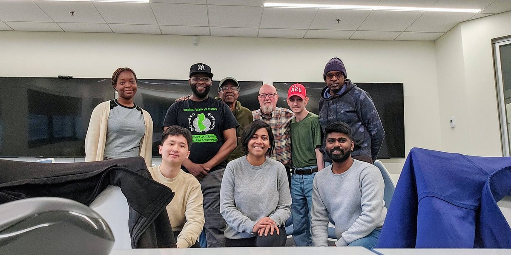

About
I am a PhD student in Information Systems at the New Jersey Institute of Technology, advised by Dr. Alisha Pradhan.
My research lies in Human-Computer Interaction, with a focus on post-mortem data management and digital identity expression.
My current work explores what happens to our personal data after we die. I primarily use qualitative methods such as interviews and co-design workshops with adults aged 65 and above.
In addition to end-of-life data planning, I am also interested in how South Asian users express digital identity through non-verbal communication media, including emoji skin tone modifiers and reaction GIFs.
Prior to my doctoral studies, I earned a Master’s in User Experience Design from Birmingham City University (UK) and worked as a management consultant with Ernst & Young LLP (India), focusing on supply chain optimization in healthcare and the oil & gas sectors.
I hold a Bachelor’s degree in Naval Architecture and Ocean Engineering from the Indian Institute of Technology, Madras (India).
Outside of academia, I enjoy writing and performing poetry (I recently published a collection), organizing technology workshops for seniors and returning citizens,
and playing musical instruments such as the ukulele, drums, and keyboard. I’ve also recently started exploring acrylic painting—mostly still-life subjects.
Publications
Understanding Older Adults' (Dis) Engagement with Design Materials
CHI Conference on Human Factors in Computing Systems (CHI ’25), 2025
Authors: Alisha Pradhan, Ben Jelen, Ramprabu Thangaraj, Katie A. Siek, Shannon Jette, Amanda Lazar
Abstract: Design workshops are a popular approach to include older adults in the technology design process. However, formative design sessions with older adults have had unexpected outcomes such as the non-use of traditional design materials like craft-based prototyping supplies or disengagement from design activities. Analyzing the engagement of 32 older adults across two design workshops, this paper sheds insights on some of these outcomes. Contributing to a growing body of HCI research on understanding older adults’ participation in design, we provide an understanding of how design materials can shape older adults’ engagement in formative design activities. Our discussion furthers research on understanding who older adults design for and why, argues for a different understanding of creative expression, and offers considerations for choosing design materials.
View Paper“That’s something that as a senior person you have to consider now”: Unpacking Older Adults’ Preferences for End-of-Life Data Planning
Designing Interactive Systems Conference (DIS ’25), 2025
Authors: Ramprabu Thangaraj, Jed R. Brubaker, Nathan Malkin, Alisha Pradhan
Abstract: What happens to a person’s data after they pass away? Designing for digital legacy requires input from individuals across all life stages, as motivations to plan vary with age. Yet, the specific perspectives that older adults have on end-of-life data management have not been investigated in depth. Through interviews with 16 older adults, we examine their preferences and motivations for managing everyday digital data (e.g., text messages, social media, photos) after death. Our findings surface several implications for end-of-life data planning, including creating awareness about digital legacy and associated risks. We also unpack and discuss how older adults’ life stage and familiarity with end-of-life planning uniquely positions them to identify barriers and opportunities in managing digital legacy, such as how post-mortem data can encode societal norms of a period or be donated for the greater good.
View PaperPoetry
I enjoy writing and performing poetry. Below are a few selected pieces.
Silhouette Portrait (2015)
Posing a permanent enigma, you stand still ever With a smile and a sneer and a million shades of marvel Crafted with panache, a portrait by the master Of course, it’s you, Madam Lisa! Countless eyes gazing you away Painting their hearts with your majestic life On the canvas of a remarkably queer bargain ‘You gave life or it, you?’ Here I lay, on a bed of nails and roses Reflecting over, reigning over the trauma When I paid a penny, for my own thought A colourless colourful rendition of the same An inharmonious piece of work, seemingly, now would it? Perhaps no, we would say A silhouette portrait of you, the polished trait of myself Truth be told, my life indeed. A harsh depiction of reality. A pitch of dark wandering all over, seeking it’s companions, all in vain Broke into a line of thought, I did ‘Face the brightness, hence the shade’ Scaling the icy mountains, the winding paths and the distant bridge I stand, against the Sun, with a beautiful view of them thence A portrait it paints itself, a silhouette of myself Whilst the majesty of hers stands stall, with both the shades I wouldn’t run myself into a pool of worries For, Ma’am Lisa, just another way, it is To portray, the parallel elegance, a masterpiece in itself The sterling silhouette portrait
Bridge to Everywhereland (2022)
Curvy and swirvy Marbled in white In its thunderous might Slowly and slowly The Bridge to Everywhereland It climbs, and it climbs A solemn hand Unwanting to succumb Palatial, infinite spatial Breaks and cracks adorned As jewels, traipsing Along the coast, no railing A thousand souls trudged the path A million souls engulfed in wrath Upon this long and winding journey They who commandeer, conquer thus The Everywhereland Everyone's place Dreams are met Unless unkempt The Bridge to Everywhereland A solemn hand To everyone's place A future in grace
My little sister (2023)
You know that I've always hated you When you were in mum's tummy When you were born like a bunny Tiny little creature, so funny You know that I've always annoyed you When you were deep in your own thoughts When you played with your likes, reels, shorts Don't you still connect the dots? But did you know That I've always loved you? That hate's my foolish way of staying true? My little sister, you are so far away I have our memories for company Distances become so tiny Seemingly Though I can't see your annoyed face In a naughtily childish haze I'll always hate you Like how you hate me too
Chicken fried rice (2024)
Let's start with my eyes I see the white of the rice and the brown of the chicken The green of the peas and the yellow of the yolk It's love at first sight My eyes extend an arm As if to kiss with vision Now comes the nose The pepper of it all And the soy Oh, boy! "Shall I sniff you for eternity?" My tastebuds are screaming, "GET HER TO ME AT ONCE, SILLY HANDS" The food and my tongue Are engaged in a loud (consensual) sex That my mouth has put up a 'DND' sign Oh, chicken fried rice, I can never get enough of you.
Volunteering
Returning Citizens Technology Workshop, April 5, 2025, Newark, New Jersey